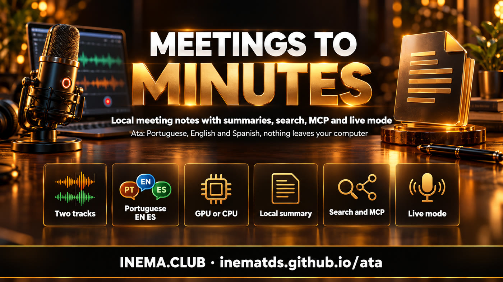

Local-first meeting notes · pt-BR, EN and ES · open source
Your meeting becomes notes, without leaving your machine
Ata records the call on two tracks (what you hear and what you say), transcribes on your own machine with GPU or CPU, and delivers a note with every line attributed to a speaker, a summary, decisions and action items. No bot in the call, no account, no paid API.
A meeting notetaker that speaks Portuguese and respects your privacy
Open INEMA project (MIT), inspired by the ideas of CrunchLog by Christian Landsteiner. It is an independent implementation: none of his code was used. What sets it apart is first-class Portuguese, English and Spanish, Linux as the main platform, GPU use, local summaries and a live mode with no paid service.

🎧 Two tracks, "the microphone is you"
The sound output (Meet, Zoom, Teams) and the microphone are recorded separately. Everything that comes from the microphone is "Me"; the gate removes the speaker echo and speaker separation only works on the other side.
🇧🇷 Portuguese, English and Spanish
Engine, filler-word cleanup ("né", "tipo"; "um", "uh"; "este", "o sea"), note, summary, demo and prep all follow the meeting language. Labels: Eu / Pessoa 2, Me / Speaker 2, Yo / Persona 2.
🔒 Local by default
Transcription (NeMo-Speech.cpp on the GPU or onnx on the CPU), summary (Ollama), search and live mode run on your machine. Claude or Codex through your subscription are optional and only receive text, never audio.
How it works
From hotkey to notes, in one path
Each meeting becomes a folder (the ata/1 bundle) with far.wav, mic.wav and meta.json. Everything that comes after (words, turns, summary, note, index) is derived and can be redone.
ata toggle→far.wav + mic.wav→transcription per track and language→gate removes the echo→who spoke (+ known voices)→turns + cleanup→JSON summary→note + search + second brain
Recording on 3 systems
Linux: PipeWire (pw-record, with track alignment by echo). Windows: WASAPI loopback. macOS 14.2+: Swift helper with process tap (source code included).
Swappable engines
Main: NeMo-Speech.cpp (Parakeet v3, Nemotron 3.5 streaming and Nemotron 3 Diarization; CUDA on the DGX Spark/GB10, Metal on the Mac). Fallback: onnx-asr + sherpa-onnx on the CPU. If the main engine fails, it falls back and records that in the note.
Reads CrunchLog
CrunchLog recordings (bundle_version: 2) are read and processed as a copy, without touching the original. Useful for migrating and for comparing results.
Prerequisites
What you need
Python 3.12 comes through uv. For local summaries, Ollama; for recording on Linux, PipeWire.
uv
Python manager from Astral.
# Linux / macOScurl -LsSf https://astral.sh/uv/install.sh | sh
# Windows (PowerShell)powershell -c "irm https://astral.sh/uv/install.ps1 | iex"
Ollama (local summary)
The default is qwen3.6:35b-a3b; you can change it in config.toml.
ffmpeg (import mp3/mp4), Piper (demo voice), Claude Code or Codex logged in (summary through your subscription).
which pw-record ffmpeg piper claude codex
User guide · step by step
From install to your first notes
Real commands from Ata 0.1.0.
1
Install
The extras bring the MCP server, live mode and the CPU engine. Use ".[all]" for everything, including Windows capture.
git clonehttps://github.com/inematds/ata && cd ata
uv tool install --python 3.12 ".[mcp,live,onnx]"ata --version # ata 0.1.0
2
Configure
Default language, folders and who writes the summary. Choosing claude or codex turns on privacy level 1 and warns that the text leaves the machine.
ata setup --lang pt-BR --summary ollama
# default folders: ~/Ata/gravacoes and ~/Ata/notas · config: ~/.config/ata/config.toml
3
Install and start the transcription engine
install detects the hardware: cuda13 on the GB10, metal on the Mac, cpu elsewhere. The engine runs only on 127.0.0.1 and, on Linux, with a memory cap.
ata engine install --dry-run # shows what will be downloadedata engine install --allow-unverified # 0.1.0: hashes not pinned yetata engine startata engine statusata doctor# [ok]/[warn]/[fail] per item; exit 0 = ready
4
First notes: the demo
A made-up meeting, with its own script in each language (3 people, numbers, one decision, two action items and one open question), goes through the real pipeline. With Piper, the voices are synthesized; with --no-tts, the audio is synthetic and works for testing without a model.
ata demo --lang pt-BR
ata demo --lang en --no-tts
# note: ~/Ata/notas/2026-10-05-2111-revisao-do-mare-app-de-hortas.md
5
Record a real meeting
Bind ata toggle to a key (GNOME/KDE, PowerToys/AutoHotkey, macOS Shortcuts, Stream Deck). On Linux, for other sound cards: ATA_FAR_TARGET and ATA_MIC_TARGET with the node.name from wpctl status.
ata toggle# startata toggle# stop and write the notesata start --title "Kickoff Acme" --speakers 3 --lang pt-BR
ata status --json
6
Import what you already have
Audio or video in any format (goes through ffmpeg) becomes a meeting with only the "far" track. CrunchLog recordings can be imported too.
ata import entrevista.mp4 --lang es --title "Entrevista Lucía"ata process --dry-run ~/CrunchLog/recordings/2026-10-05-1642-demo
# bundle crunchlog/2 lido: 2 tracks, offsets={"far": 0.0, "mic": 0.0}
7
Adjust the notes
Give names, reprocess with the right number of people, export subtitles. Your own notes go in the my-notes.md of the meeting folder and feed into the summary.
ata speakers latest "Speaker 2=Ana""Speaker 3=Bruno"ata process latest --speakers 4
ata rerender latest
ata export latest --format srt # srt|vtt|txt|json|md|csv
8
Search and ask across all meetings
The SQLite index combines keyword search (FTS5) and search by meaning (Ollama vectors). Each excerpt comes with [meeting, mm:ss].
ata search"launch date" --since 30d
ata ask"what did we decide about the launch?"# [Revisão do Maré app de hortas, 01:00] Eu: ...ficou definido que lançamos a versão dois no dia 14 de novembroata actions --owner Ana # open action items across meetingsata actions --done <id> # marks as done (id from --json)
9
Prepare the next meeting
The agenda gathers open action items, decisions and questions from the meetings with that client. The (qN) items check themselves off when the next meeting answers them, including live.
ata prep"acme" --calendar "Thu 2pm, Ana and Bruno"# ~/Ata/notas/2026-10-06-acme-preparacao.md
10
Live mode
During recording, it transcribes both tracks in real time with the local Nemotron 3.5 streaming, writes the turns to live/turns.jsonl and checks off the agenda. No paid service.
ata start --title "Acme weekly"ata live startata live tail# shows the turns as they arrive
11
Recognize voices (optional)
Off by default, because voice is biometric data. With [voices] enabled = true, enroll a voice and "Speaker 2" becomes "Ana" in later meetings. It stays only on your machine and can be deleted.
ata voices enroll Ana latest "Speaker 2"ata voices listata voices forget --all
12
Dashboard
Record and stop, listen to the tracks, clickable transcript, rename speakers, search and live mode, in PT, EN or ES. It only listens on 127.0.0.1; the first visit uses the link with the token.
ata dashboard# http://127.0.0.1:47530/
Agents and second brain
Your meetings become your agents' memory
Ata was designed for agents: the MCP server, the skills and Markdown are first-class interfaces.
Each meeting becomes fontes/AAAA-MM-DD-slug.md (type source, subtype meeting) and decisions go into decisoes/registro.md. Files you edited are never overwritten.
ata connect cerebro --dir ~/meu-cerebro
ata connect obsidian --vault ~/Obsidian
🧩 Skills and plugin
Five skills for Claude Code and Codex: meeting-notes, action-items, meeting-prep, ask-meetings, meeting-to-wiki. The plugin is in .claude-plugin/. Jack Roberts' Agentic OS is also supported (optional).
ata connect agentic-os --dry-run
Real screens
The dashboard with the demo meetings
Screenshots from version 0.1.0 with the three demo meetings (pt-BR, en, es).
Overview: record and stop, recorder state and latest meetings.Meeting: summary, topics, decisions, action items with owner, questions, renamable speakers and clickable transcript.Meetings: list with filter by title, duration and number of turns.Search: what was said about a topic, across all meetings, with the exact moment.Live: the turns arriving during the meeting.Settings: language, engines, summary and privacy.
Status and privacy
What is ready and what still needs measuring
Transparency about version 0.1.0.
Ready
All phases implementedRecording on 3 systems, pipeline, trilingual note, summary, search, questions, agenda, action items, voices, connections, MCP, dashboard, live mode, demo, doctor and bench. Over 450 automated tests, with no network and no models.
Tested
Real recording on LinuxPipeWire capture tested for real on a DGX Spark (GB10, ARM64).
To measure
Real enginesNeMo-Speech.cpp, onnx and Ollama are implemented but have not been measured in this version yet. The NeMo-Speech.cpp API format follows what is documented in src/ata/engines/nemo.py, and the download hashes are not pinned yet (hence --allow-unverified).
To test
Windows and macOSWindows capture is implemented; the macOS helper ships as Swift source code, not compiled yet.
Level 0
Default privacy: nothing leaves the machineTranscription, summary through Ollama, search and live mode are all local. Level 1 (Claude or Codex through your subscription) sends only text, with tools turned off. Logs never contain meeting text. ata privacy <meeting> shows what touched each recording.